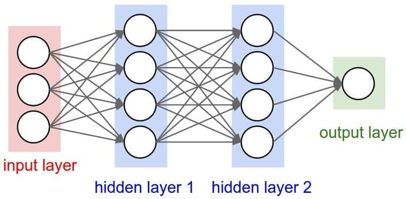

A propos de moi
Développeur Web et Mobile
Passionné par l'informatique et les jeux vidéos depuis toujours, j'aimerais devenir créateur plutôt que simple utilisateur
Date de naissance : 14/03/2000
Age : 23 ans
Etude : BTS SIO option SLAM
Téléphone : 07 81 40 11 34
Email : nauguet.benjamin@gmail.com
Centre d'intérêts :
- Jeux vidéo
- Mangas
- Hardware
Compétences
Voici les compétences acquises au long de ma formation :
Mes réalisations
Voici quelques projets que vous pourrez retrouver sur GitHubGeoWorld
Projet réalisé lors de la 1ère année du BTS, ayant pour but d'apprendre à récupérer et afficher des données venant d'une base de données SQL.
Voir le dépôt GitHubDevine la carte
Projet réalisé lors de la 2e année du BTS, ayant pour but de générer un paquet de 32 ou 52 cartes et d'en faire deviner une au hasard au joueur.
Voir le dépôt GitHubSushi Fast
Projet réalisé lors de la 2e année du BTS, pour apprendre à se servir du Framework Angular ainsi que d'une API en réalisant une page d'achat en ligne avec gestion du panier et du prix de la commande pour une entreprise de vente de sushi fictive nommée Beguitchev Sushi.
Voir le dépôt GitHubAssistant et Moi
Projet réalisé lors du stage de 1ère année, pour découvrir Android Studio en réalisant une application mobile d'assistance aux personnes vulnérables pour le lycée Léonard de Vinci. Au cours de ce projet, au dela du développement, nous avons rédigé un cahier des charges et appris à planifier un projet.
Voir le dépôt GitHubHughie
Projet réalisé lors du stage de 2e année, nous devions faire la refonte totale d'une application utilisée en interne en utilisant le framework VueJS.
Voir le dépôt GitHubVeille Technologique
Qu’est ce que qu’une IA ?
L’intelligence artificielle est un ensemble de théories et de techniques mises en œuvre en vue de réaliser des machines capables de simuler l’intelligence humaine.Composée de données et d’algorithmes, elle permet aux machines d’imiter certains aspects de l’intelligence humaine, notamment la perception, la résolution de problèmes ou même la créativité.
L'IA peut être classée en deux types : l'IA faible (ou étroite) et l'IA forte (ou générale). L'IA faible est conçue pour effectuer des tâches spécifiques, telles que la reconnaissance de la parole ou la conduite d'une voiture autonome, tandis que l'IA forte est capable d'effectuer n'importe quelle tâche intellectuelle qu'un être humain peut accomplir.
Actuellement, il n'existe pas d'IA forte qui soit capable d'égaler ou de dépasser la capacité intellectuelle humaine dans tous les domaines. Les IA actuelles sont considérées comme des IA faibles, qui sont conçues pour accomplir des tâches spécifiques et limitées.
Bien que l'IA ait connu des avancées significatives ces dernières années, avec notamment des progrès dans les domaines de l'apprentissage automatique, des réseaux de neurones profonds et des algorithmes de traitement du langage naturel, les systèmes d'IA sont encore très loin d'atteindre un niveau de compréhension et de raisonnement comparable à celui d'un être humain.
Cependant, les recherches dans le domaine de l'IA se poursuivent et de nombreux scientifiques et ingénieurs travaillent sur le développement de technologies plus avancées, qui pourraient éventuellement conduire à l'émergence d'une IA forte dans le futur.
Histoire de l’IA
L’avènement de l’intelligence artificielle eut lieu en 1956, en suscitant la conception de systèmes visant à modéliser la complexité de l’intelligence humaine en concevant ces systèmes comme des cerveaux.En 1963, les premiers systèmes étaient capables de résoudre des problèmes complexes. En 1971, le robot virtuel Shrdlu pouvait dialoguer avec l’expérimentateur pour demander des précisions sur ses missions. En 1984, ils étaient même capables de réaliser des diagnostics plus rapidement et précisément qu’un médecin spécialisé.
Cependant, en 1972 Dreyfus souligne le fait que ces programmes dépendent énormément des humains, pour fournir et préparer les données ainsi que d’interpréter les résultats. Suite à ça des chercheurs ont tenté d’inculquer le “sens commun” à un programme afin qu’il puisse communiquer de manière naturelle avec des humains. Ce projet fut un échec, mais ouvrit plusieurs voies d’explorations de l’IA.
Les réseaux neuronaux artificiels
 Les réseaux de neurones artificiels (RNA) sont une technique d'apprentissage machine inspirée du fonctionnement du cerveau humain. Ils sont conçus pour résoudre des problèmes complexes en utilisant un grand nombre de neurones interconnectés, qui travaillent ensemble pour traiter l'information.Les RNA sont composés de plusieurs couches de neurones interconnectés, chacune d'entre elles effectuant une transformation mathématique de l'entrée pour produire une sortie. L'entrée est alimentée dans la première couche du réseau, qui effectue des calculs et transmet les résultats à la couche suivante, et ainsi de suite jusqu'à ce que la sortie finale soit produite.
Pendant l'apprentissage, les poids des connexions entre les neurones sont ajustés pour minimiser l'erreur entre la sortie prédite et la sortie réelle. Cette phase d'apprentissage peut être supervisée, semi-supervisée ou non supervisée, en fonction de la disponibilité des données d'entraînement.
Les RNA sont utilisés dans de nombreux domaines, tels que la reconnaissance d'images, la reconnaissance vocale, la traduction automatique et la prédiction de séries chronologiques. Ils ont prouvé leur efficacité dans de nombreux cas et sont devenus un outil de choix pour de nombreuses applications d'intelligence artificielle.
L’IA dans la vie de tous les jours
L'IA est de plus en plus présente dans la vie de tous les jours et elle a un impact significatif sur notre quotidien. Voici quelques exemples de son utilisation :Les assistants vocaux : les assistants vocaux tels que Siri, Alexa et Google Assistant utilisent l'IA pour comprendre les requêtes vocales des utilisateurs et y répondre.
Les recommandations de produits : de nombreuses plateformes de commerce en ligne utilisent des algorithmes d'IA pour recommander des produits aux clients en fonction de leurs achats et de leur historique de navigation.
Les chatbots : les chatbots sont des programmes informatiques qui utilisent l'IA pour simuler des conversations humaines et fournir des réponses rapides aux questions des clients dans les centres d'appels, les sites web et les réseaux sociaux.
Les voitures autonomes : l'IA est au cœur des systèmes de conduite autonome des voitures, en leur permettant de prendre des décisions en temps réel sur la base des données collectées par les capteurs.
La reconnaissance faciale : la reconnaissance faciale est une application de l'IA qui est utilisée dans les systèmes de sécurité, les caméras de surveillance et les applications de reconnaissance de visages pour déverrouiller les téléphones.
Les traductions automatiques : les services de traduction automatique, tels que Google Translate, utilisent l'IA pour traduire rapidement les textes en différentes langues.
En résumé, l'IA est devenue une technologie clé dans de nombreux domaines de la vie quotidienne, améliorant l'efficacité, la commodité et la qualité de vie des utilisateurs.
Les limites de l’IA
Malgré les avancées significatives dans le domaine de l'IA, il existe encore plusieurs limites et défis que les scientifiques et les ingénieurs doivent relever. Voici quelques exemples de limites de l'IA :La compréhension humaine : bien que l'IA puisse être très performante dans des tâches spécifiques, elle ne peut pas encore rivaliser avec la compréhension et la créativité humaines. Les machines ne peuvent pas encore raisonner, résoudre des problèmes de manière générale ou utiliser le langage naturel avec la même flexibilité et la même subtilité que les êtres humains.
La sécurité : l'IA peut être utilisée pour effectuer des attaques informatiques sophistiquées et dangereuses, en exploitant les vulnérabilités des systèmes automatisés. Les défenseurs de la sécurité doivent donc être conscients de ces risques potentiels et développer des contre-mesures appropriées.
La transparence : les modèles d'IA peuvent être très complexes et difficiles à comprendre, même pour les experts du domaine. Cela peut rendre difficile la compréhension des décisions prises par les systèmes d'IA, ce qui peut être préjudiciable dans des domaines tels que la médecine ou la justice.
Le biais : les systèmes d'IA sont susceptibles de reproduire les biais existants dans les données d'entraînement, ce qui peut conduire à des résultats discriminatoires ou injustes. Il est donc important de développer des méthodes pour détecter et corriger ces biais.
Les limites computationnelles : les modèles d'IA actuels nécessitent des quantités massives de données et de puissance de calcul pour fonctionner efficacement. Cela peut limiter leur applicabilité dans des domaines où les ressources informatiques sont limitées, tels que les pays en développement ou les zones rurales.
En somme, l'IA a encore des défis à relever avant de devenir une technologie pleinement mature et fiable. Les limites actuelles devraient être considérées comme des opportunités pour les scientifiques et les ingénieurs de développer des solutions innovantes pour améliorer l'efficacité et la sécurité des systèmes d'IA.
Quelques IA connues :
 - Les assistants vocaux tels que Siri ou Alexa
- Les assistants vocaux tels que Siri ou Alexa
- Watson - développé par IBM, Watson est une IA qui utilise la compréhension naturelle du langage et la reconnaissance des images pour répondre à des questions, effectuer des analyses de données et faire des recommandations.
- AlphaGo - développé par la société de recherche Google DeepMind, AlphaGo est un programme d'IA qui a remporté des matchs de jeu de Go contre des champions du monde en utilisant des techniques de renforcement de l'apprentissage et de réseaux de neurones profonds.
- Tesla Autopilot - un système de conduite autonome développé par Tesla Motors, qui utilise des capteurs, des caméras et des algorithmes d'IA pour prendre des décisions en temps réel sur la conduite et la sécurité routière.
- ChatGPT
- MidJourney